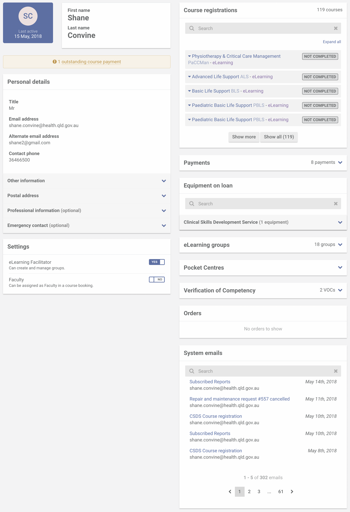
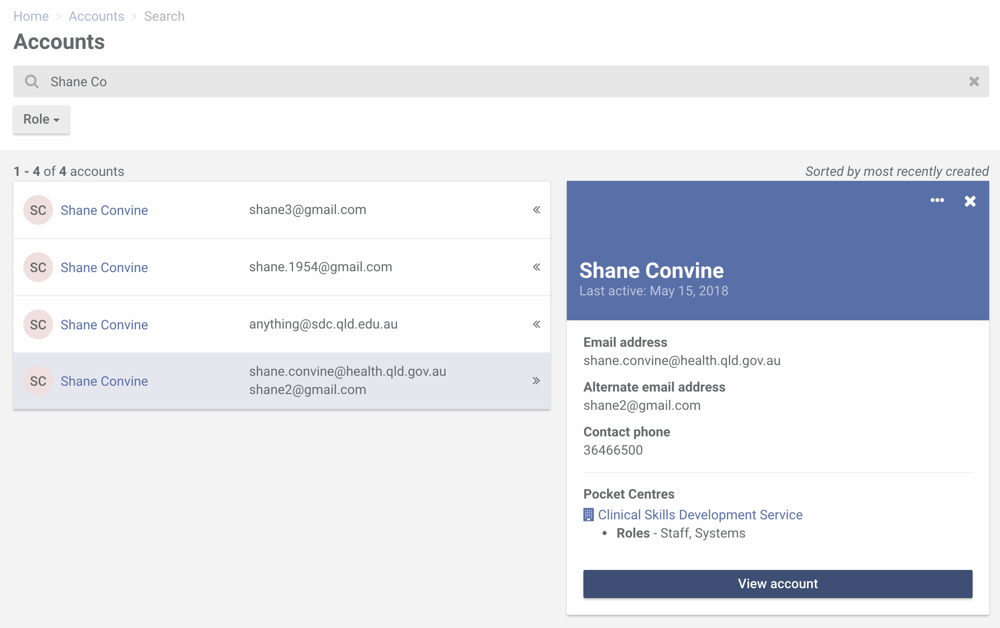

A user account profile shows you (1) basic information about a user which includes postal address, professional information and emergency contact, (2) user roles (i.e. facilitator or faculty), (3) course registrations, (4) payments, (5) equipment on loan, (6) eLearning groups, (7) Pocket Centres, (8) VOCs, and (9) system emails.
To view a user account profile, head over to the Accounts section. Type in the name or email address of the user you want to search for and hit Enter.
Select the user from the list of results. A preview modal will be displayed with basic information about that user. Click View account to see the full user account profile.
